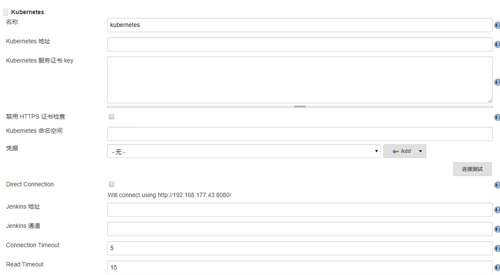
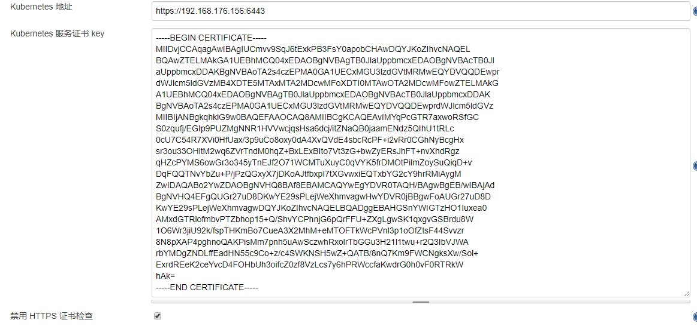
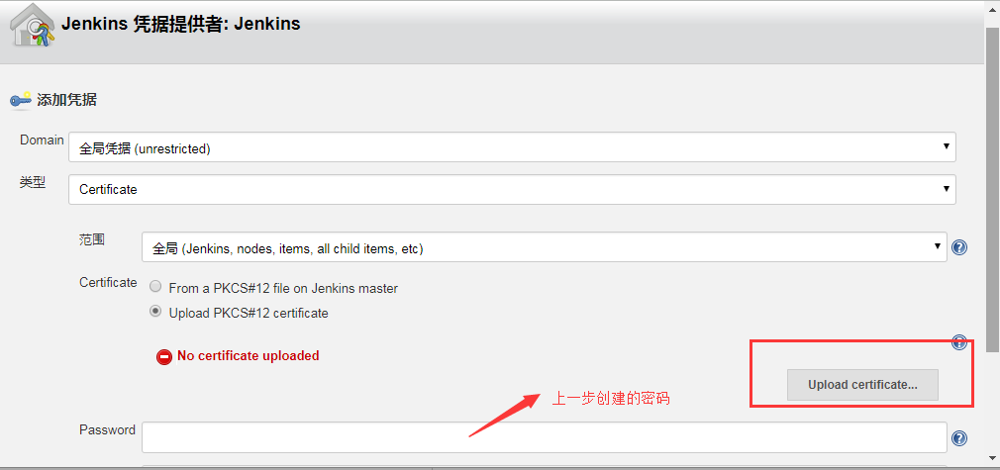
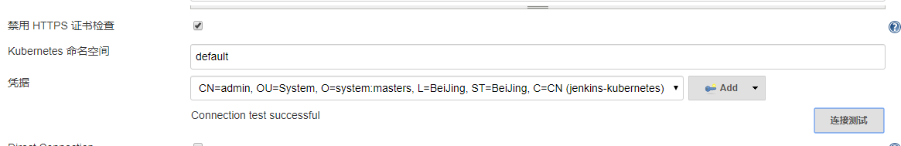
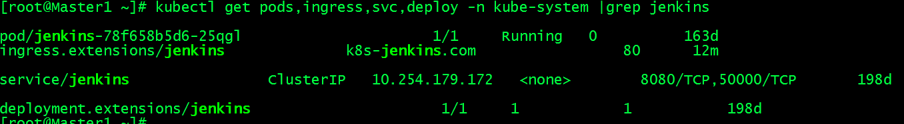
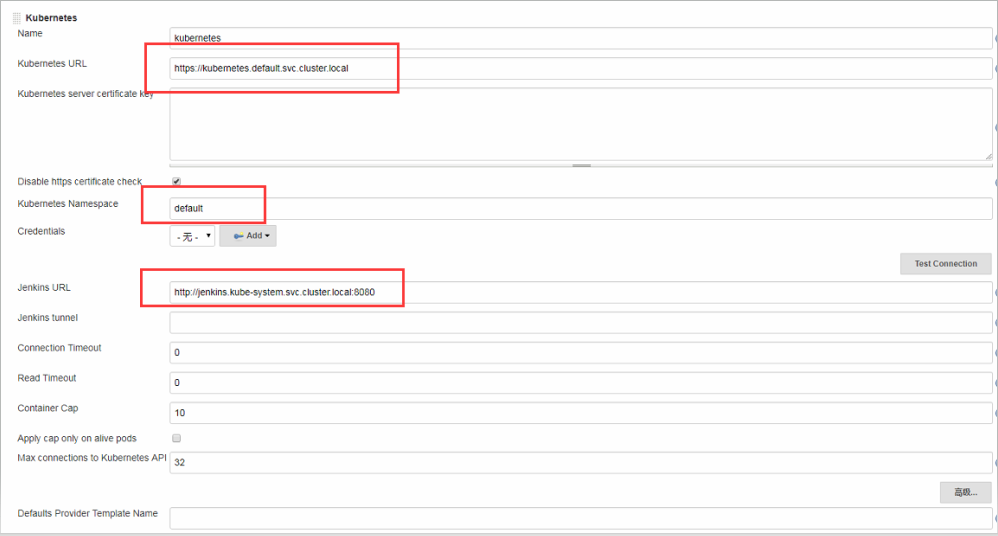
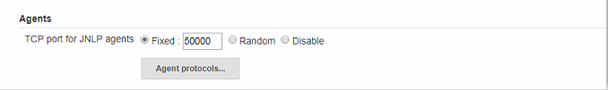
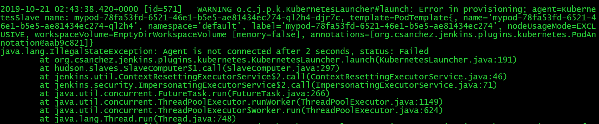
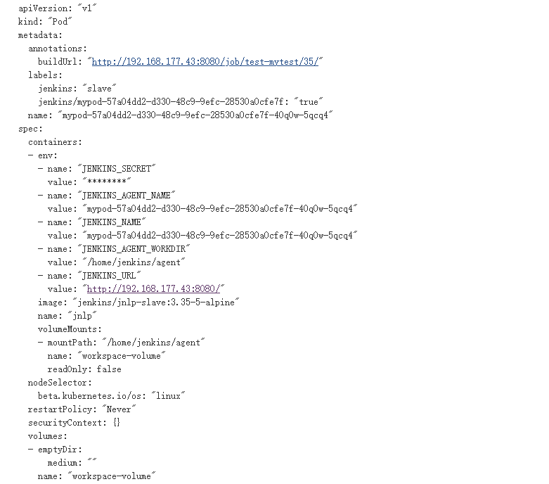
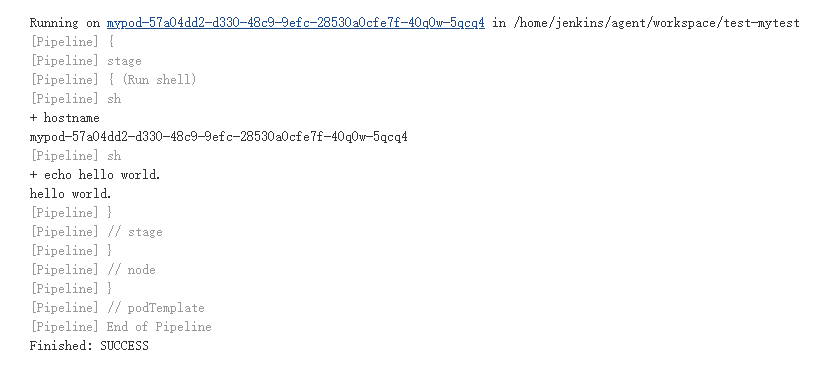

- 01.Jenkins的安装配置与日常维护.md.html
- 02.Jenkins强大的插件功能.md.html
- 03.Devops工具链.md.html
- 04.初探Jenkins CD实践.md.html
- 05.Jenkins常用项目配置参数.md.html
- 06.Jenkins部署之Docker要点.md.html
- 07.Jenkins集成之Ansible要点.md.html
- 08.Jenkins集成Ansible持续部署服务到Docker容器.md.html
- 09.实现自动化引擎之Jenkins Pipeline声明式语法.md.html
- 10.实现自动化引擎之Jenkins Pipeline脚本式语法.md.html
- 11.Pipeline语法进行持续交付与基础实践.md.html
- 12.Jenkins Docker Pipeline插件动态生成Slave节点语法剖析.md.html
- 13.使用 Docker Pipeline插件动态生成Jenkins Slave 实践.md.html
- 14.搞定不同环境下的Jenkins与Kubernetes集群连接配置.md.html
- 15.Jenkins Kubernetes Plugin介绍与语法详解.md.html
- 16.使用Kubernetes编排Jenkins Slave节点持续交付项目.md.html
- 17.使用Kubernetes插件持续部署服务到Kubernetes集群.md.html
- 18.Ansible Plugin插件语法详解与持续部署服务到kubernetes集群.md.html
- 捐赠
14.搞定不同环境下的Jenkins与Kubernetes集群连接配置
在前面的章节中，简单的介绍了使用Jenkins与Docker集成的一些基本语法以及实现持续交付和持续部署的配置。在Jenkins中除了可以与docker集成外，还可以与容器编排工具kubernetes集成。
Jenkins使用kubernetes插件主要用于完成两方面的工作：一是用于在kubernetes集群内动态生成一个pod作为Jenkins 的slave节点，提供流水线执行的工作环境；二是用于将应用代码持续部署到kubernetes集群中。
基于上面提到的这两方面的用途，在剩下的章节会详细介绍Jenkins与kubernetes的集成配置与使用方法。
同docker pipeline一样，在Jenkins里集成kubernetes也是依赖于插件的，所以在介绍如何配置与使用jenkins集成kubernetes之前需要先安装插件：
- Kubernetes plugin
- Kubernetes CLI
- Kubernetes Continous Deploy
上面列出的插件，第一个用于在kubernetes集群中动态生成jenkins slave节点，后两个插件用于通过不同的方式持续部署代码到kubernetes集群。无论哪种插件，使用前都要先保证jenkins能够连接到kubernetes集群，所以本章节就从不同环境下的jenkins连接kubernetes集群的配置说起。
配置Jenkins连接Kubernetes
使用docker pipeline做持续交付的时候，默认直接使用的宿主机的docker进程。而Jenkins与kubernetes的集成，主要是通过调用Kubernetes的API去kubernetes集群中进行工作的。大多数公司在安装kubernetes集群配置apiserver服务时使用了证书，所以在配置jenkins连接kubernetes集群时，需要根据kubernetes的配置文件生成一系列证书以及key，并将证书上传到Jenkins用来对apiserver进行认证。
下面针对部署在kubernetes集群环境下的Jenkins和非kubernetes集群环境下的jenkins连接kubernetes集群的配置进行详细介绍。
部署在非kubernetes集群内Jenkins连接kubernetes配置
安装好插件以后，进入Jenkins首页，点击菜单”Manage Jenkins(系统管理)-–> Configure System(系统设置)” 在跳转到的界面中，到最底部，点击” Add a new cloud（新建一个云）–> kubernetes“。
如下所示：

其中：
名称：这里用于填写要添加的这个云（cloud）的名称，默认为”kubernetes”，如果不想用这个可以自定义。在编写pipeline的时候会用到。
kubernetes 地址：用于填写kubernetes集群的地址，做了多master集群高可用的环境直接写vip地址加端口；只有单个master的环境直接写master加端口地址即可。
Kubernetes 服务证书 key：用于填写与kubernetes集群认证的证书内容。
Kubernetes 命名空间：用于填写调用kubernetes时生成的pod工作的namespace。
Credentials（凭据）：用于连接kubernetes的凭证。
Jenkins 地址：Jenkins的连接地址。
了解了基本配置的参数说明，下面主要说一下”Kubernetes 服务证书 key“和Credentials（凭据）配置。
kubernetes集群安装的时候生成了一系列证书以及key，并且在配置kubernetes中kubectl客户端命令权限的时候，根据这些证书以及key生成了一个kubeconfig文件，用于kubectl与集群通信，这个文件默认为/root/.kube/config文件，对集群有最高操作权限（如果给了cluster-admin权限）。
Jenkins需要根据这个文件生成的证书与集群通信，所以我们在生产环境配置Jenkins连接kubernetes集群的时候，需要注意一下kubeconfig文件绑定的用户的权限，最好从新生成一个低权限的kubeconfig文件，而不要用kubectl命令使用的文件。
我这里为了测试方便，就先使用kubectl命令使用的kubeconfig文件，至于如何生成低权限的kubeconfig文件，这里不做介绍，有兴趣的可以私聊我。
配置证书key
首先看一下config文件。
[root@k8s_master1 ~]# cat /root/.kube/config
apiVersion: v1
clusters:
- cluster:
certificate-authority-data: LS0tLS1CRUdJTiBDRVJUSUZJQ0FURS0tLS0tCk1JSUR2akNDQXFhZ0F3SUJBZ0lVT0g4cDd6QXZaR3p4cGxUVy9xe......
WRnVRNm9IcjZ0Yk0wa1NJVkhvN2JNQjRWOGZoUWk4WjlLS243ZTFsQWdaVWhyWGMzTzRqVS9xVHRWRQpSRXc9Ci0tLS0tRU5EIENFUlRJRklDQVRFLS0tLS0K
server: https://192.168.176.156:6443
name: kubernetes
contexts:
- context:
cluster: kubernetes
user: admin
name: kubernetes
current-context: kubernetes
kind: Config
preferences: {}
users:
- name: admin
user:
client-certificate-data: LS0tLS1CRUdJTiBDRVJUSUZJQ0FURS0tLS0tCk1JSUQzVENDQXNXZ0F3SUJBZ0lVQmI1ZTJFaUk1WndSY1JVeFVyZ......
Qk9DTzRBcEVzWXNOa084UVF2RTlwVEhpNlE0LzhLV0NtU0wyNgotLS0tLUVORCBDRVJUSUZJQ0FURS0tLS0tCg==
client-key-data: LS0tLS1CRUdJTiBSU0EgUFJJVkFURSBLRVktLS0tLQpNSUlFb2dJQkFBS0NBUUVBeDdjNkpRTFdQaC90REtjUDQrcDV5aCtWdWRCUmFacFJ2THM2MU1POGFZWFRCT09pCkJyZzFQb0laRzZEbXNBNnUyUStOVnlGOWg5RTQ3VVpFNjI5ND...... K3dGdUF2S29vRm9lRFZCS3I3NjdiTFA3ZTBibkVqS1ExRmNHVFFFQVU9Ci0tLS0tRU5EIFJTQSBQUklWQVRFIEtFWS0tLS0tCg==
获取文件中certificate-authority-data的内容并转化成base64 encoded文件
echo LS0tLS1CRUdJTiBDRVJUSUZJQ0FURS0tLS0tCk1JSUR2akNDQXFhZ0F3SUJBZ0lVT0g4cDd6QXZaR3p4cGxUVy9xejRWRmxLQllRd0RRWUpLb1pJaHZjTkFRRUwKQlFBd1pURUxNQWtHQTFVRUJoTUNRMDR4RURBT0JnTlZCQWdUQjBKbG......
WRnVRNm9IcjZ0Yk0wa1NJVkhvN2JNQjRWOGZoUWk4WjlLS243ZTFsQWdaVWhyWGMzTzRqVS9xVHRWRQpSRXc9Ci0tLS0tRU5EIENFUlRJRklDQVRFLS0tLS0K |base64 -d > ca.crt
将ca.crt的内容粘贴到kubernetes server certificate key(Kubernetes 服务证书 key)框里，如下图所示：

配置凭据
获取/root/.kube/config文件中client-certificate-data和client-key-data的内容并转化成base64 encoded文件
echo LS0tLS1CRUdJTiBDRVJUSUZJQ0FURS0tLS0tCk1JSUQzVENDQXNXZ0F3SUJBZ0lVQmI1ZTJFaUk1WndSY1JVeFVyZ......
Qk9DTzRBcEVzWXNOa084UVF2RTlwVEhpNlE0LzhLV0NtU0wyNgotLS0tLUVORCBDRVJUSUZJQ0FURS0tLS0tCg== |base64 -d >client.crt
//生成key
echo LS0tLS1CRUdJTiBSU0EgUFJJVkFURSBLRVktLS0tLQpNSUlFb2dJQkFBS0NBUUVBeDdjNkpRTFdQaC90REtjUDQrc......
K3dGdUF2S29vRm9lRFZCS3I3NjdiTFA3ZTBibkVqS1ExRmNHVFFFQVU9Ci0tLS0tRU5EIFJTQSBQUklWQVRFIEtFWS0tLS0tCg== | base64 -d >client.key
生成Client P12认证文件cert.pfx，并下载至本地
openssl pkcs12 -export -out cert.pfx -inkey client.key -in client.crt -certfile ca.crt
Enter Export Password: //密码自定义，jenkins导入证书的时候需要用到
Verifying - Enter Export Password:
在jenkins凭据菜单添加凭据

如上图所指示，凭据类型为”Certiticate“，password为生成证书时的设置的密码。
添加完成后如下图所示，点击连接测试
连接成功如下所示：

到此，部署在非kubernetes集群内的Jenkins连接kubernetes配置就完成了。
部署在kubernetes集群内jenkins连接kubernetes配置
在前面介绍jenkins安装配置章节没有介绍如何在kubernetes集群中部署，所以本小节的开头就先介绍一下如何在kubernetes集群中部署jenkins。
kubernetes系统中使用资源对象来描述某个系统的期望状态以及对象的基本信息。对于部署某个应用或者服务使用最多的资源对象就是deployment，所以这里使用deployment来描述jenkins的配置并部署。
在kubernetes集群部署jenkins
首先需要创建一个服务账户（ServiceAccount），用来绑定对某一个命名空间的一系列kubernetes资源对象的操作权限。
如下jenkins-rbac.yaml文件：
---
apiVersion: v1
kind: ServiceAccount
metadata:
name: jenkins
namespace: kube-system
---
kind: Role
apiVersion: rbac.authorization.k8s.io/v1beta1
metadata:
name: jenkins
namespace: kube-system
rules:
- apiGroups: [""]
resources: ["pods"]
verbs: ["create", "delete", "get", "list", "patch", "update", "watch"]
- apiGroups: [""]
resources: ["pods/exec"]
verbs: ["create", "delete", "get", "list", "patch", "update", "watch"]
- apiGroups: [""]
resources: ["pods/log"]
verbs: ["get", "list", "watch"]
- apiGroups: [""]
resources: ["secrets"]
verbs: ["get"]
---
apiVersion: rbac.authorization.k8s.io/v1beta1
kind: RoleBinding
metadata:
name: jenkins
namespace: kube-system
roleRef:
apiGroup: rbac.authorization.k8s.io
kind: Role
name: jenkins
subjects:
- kind: ServiceAccount
name: jenkins
然后创建deployment资源对象文件，来描述jenkins的一些基本配置信息，比如开放的端口，启动参数，使用的镜像等。
如下jenkins-deployment.yaml文件：
apiVersion: extensions/v1beta1
kind: Deployment
metadata:
name: jenkins
labels:
app-name: jenkins
namespace: kube-system
spec:
replicas: 1
strategy:
type: RollingUpdate
rollingUpdate:
maxSurge: 1
maxUnavailable: 0
template:
metadata:
labels:
app-name: jenkins
spec:
serviceAccount: "jenkins"
containers:
- name: jenkins
image: docker.io/jenkins:latest
imagePullPolicy: IfNotPresent
ports:
- containerPort: 8080
name: web
protocol: TCP
- containerPort: 50000
name: agent
protocol: TCP
volumeMounts:
- name: jenkins-home
mountPath: /var/jenkins_home
env:
- name: JAVA_OPTS
value: "-Duser.timezone=Asia/Shanghai -XX:+UnlockExperimentalVMOptions -XX:+UseCGroupMemoryLimitForHeap -XX:MaxRAMFraction=1 -Dhudson.slaves.NodeProvisioner.MARGIN=50 -Dhudson.slaves.NodeProvisioner.MARGIN0=0.85"
volumes:
- name: jenkins-home
persistentVolumeClaim:
claimName: jenkins-public-pvc
在资源对象的定义中使用了pv和pvc做持久化volume，所以还需要创建这两种资源对象定义的文件。
$ cat jenkins-pv.yaml
kind: PersistentVolume
apiVersion: v1
metadata:
labels:
name: jenkins-public-pv
name: jenkins-public-pv
namespace: kube-system
spec:
capacity:
storage: 100Gi
accessModes:
- ReadWriteMany
persistentVolumeReclaimPolicy: Retain
nfs:
path: /data/nfs/jenkins-data
server: 192.168.177.43
$ cat jenkins-pvc.yaml
kind: PersistentVolumeClaim
apiVersion: v1
metadata:
name: jenkins-public-pvc
namespace: kube-system
spec:
accessModes:
- ReadWriteMany
resources:
requests:
storage: 100Gi
selector:
matchLabels:
name: jenkins-public-pv
使用nfs作为共享存储，创建pvc使用pv，在实际工作中，一般使用storageclass替代pv作为动态存储。当然如果为了简单，你也可以用挂载nfs目录的方式，或者指定节点通过hostpath将工作目录挂在到宿主机，方法比较多，根据个人实际情况选择合适的存储即可。
部署service资源对象，相当于给运行jenkins服务的pod加了一个代理。
如下jenkins-service.yaml：
kind: Service
apiVersion: v1
metadata:
labels:
app-name: jenkins
name: jenkins
namespace: kube-system
spec:
ports:
- port: 8080
targetPort: 8080
name: web
- port: 50000
targetPort: 50000
name: agent
selector:
app-name: jenkins
部署ingress服务，直接跳过service接管service代理的pod。
如下jenkins-ingress.yaml：
apiVersion: extensions/v1beta1
kind: Ingress
metadata:
name: jenkins
namespace: kube-system
spec:
rules:
- host: k8s-jenkins.com
http:
paths:
- path: /
backend:
serviceName: jenkins
servicePort: 8080
创建好ingress后，需要添加部署ingress controllernode节点的ip和ingress中定义的host到本地hosts文件做解析。如果没有部署ingress服务，可以直接编辑上一步骤中创建service时的类型为nodePort，这样就可以通过访问nodeIP:nodePort的方式访问jenkins了。
部署完成后如下所示：
$ kubectl get pods,ingress,svc,deploy -n kube-system |grep jenkins
pod/jenkins-78f658b5d6-25qgl 1/1 Running 0 163d
ingress.extensions/jenkins k8s-jenkins.com 80 10m
service/jenkins ClusterIP 10.254.179.172 <none> 8080/TCP,50000/TCP 198d
deployment.extensions/jenkins 1/1 1 1 198d

部署好后的其他配置与在前面章节安装配置jenkins的方法一样。有关在kubernetes集群中安装jenkins服务的方法就介绍到这里。
配置jenkins连接kubernetes
部署在kubernetes集群内的jenkins配置连接kubernetes相对较简单，同样在系统配置页进行配置，不用生成上面的一系列证书，kubernetes的地址直接写kubernetes的FQDN即可。
如下所示：- 
说明
Name 处默认为 kubernetes，也可以修改为其他名称，这里不做重复介绍。
Kubernetes URL 处可以填写 https://kubernetes.default ，为Kubernetes Service 对应的 DNS 记录，通过该DNS记录可以解析成该 Service 的 Cluster IP。注意：这里也可以填写 https://kubernetes.default.svc.cluster.local 完整 DNS 记录，因为它要符合 service_name.namespace_name.svc.cluster_domain的命名方式。也可以直接填写外部 Kubernetes 的地址 https://ClusterIP:Ports （不推荐）。
Jenkins URL 处应该填写Jenkins的service地址和端口。比如我的：http://jenkins.kube-system.svc.cluster.local:8080 也可以写成http://jenkins.kube-system:8080， 表示jenkins的service名称和所在的namespace名称，同kubernetes url设置类似，也是使用Jenkins Service 对应的 DNS 记录以及端口。如果暴露服务的方式为nodeport，也可以用http://NodeIP:NodePort（本示例没配置）的方式，根据自己实际情况修改即可。
Credentials ：同属于一个集群环境，对于集群认证的过程就不需要了，认证凭证也就不用填写了。
Jenkins虽然能连接kubernetes了，但是通过kubernetes还不能生成动态的slave代理，因为slave agent（jnlp-agent）在启动的时候会通过50000（默认）端口与jenkins master进行通信。Jenkins这个端口默认是关闭的，所以还需要开启这个端口。
Manage Jenkins(系统管理)-–>（Configure global Security）全局安全配置-–> Agents(代理）

说明：
这里指定的端口是jnlp-agent连接jenkins-master使用的端口。
如果Jenkins-master只是在Docker容器(没有使用容器编排系统)中启动的一定要记得将这个端口暴露到外部，不然jenkins-master会不知道slave是否已经启动，会反复去创建pod直到到超过重试次数。
该端口的默认值是50000，如果要修改为其他端口，需要修改在创建jenkins”云”时对应的Jenkins Tunnel(通道)参数的配置，如果使用50000端口，这里可以不用填写，如果换成别的端口，这里需要单独设定，最好是jenkins_url:port的形式。
如果不开启代理端口，Jenkins通过kubernetes动态生成slave节点的时候，jenkins后台会报如下错误，并且pod会不断的生成和删除。

到这里，jenkins与kubernetes的集成就成功了。
默认情况下，agent代理连Jenkins的接超时时间为100秒。在特殊情况下，如果想设置一个不同的值，可以将system属性设置org.csanchez.jenkins.plugins.kubernetes.PodTemplate.connectionTimeout为一个不同的值。但是100s的话其实够用了，如果超过100s还没生成代理pod，就需要根据jenkins日志去排查问题了。如果jenkins连接kubernetes配置成功了，大多数情况下的错误一般就是配置podtemplate（是什么，后面章节会介绍到）出现了问题。
示例
上面配置好了如何连接kubernetes，下面用一个示例测试配置是否成功。
将下面示例放到pipeline脚本中。
def label = "mypod-${UUID.randomUUID().toString()}"
podTemplate(label: label, cloud: 'kubernetes') {
node(label) {
stage('Run shell') {
sh 'hostname'
sh 'echo hello world.'
}
}
}
说明：
PodTemplate中的label参数用于给Pod指定一个唯一的名称。
PodTemplate中cloud参数的值必须是在系统配置添加的云的名称。
node中直接使用”label”便可以引用上面定义的label变量，表示在该pod名称中执行命令，如果不指定的话，默认还是在Jenkins服务所在主机上执行流水线脚本。
执行结果如下：


根据上面的执行结果可以看到Jenkins通过kubernetes调用的资源对象pod的yaml定义；使用的镜像默认为jenkins/jnlp-slave:3.35-5-alpine；镜像名称以及一些pod的环境变量等信息。
除了可以在pipeline类型的job中使用kubernetes插件外，也可以在其他类型的job中使用，但是此时需要在jenkins的系统配置中配置PodTemplate，此处先不介绍，在后面的实践章节会进行说明。
无论哪种类型的job，在job执行的过程中，都可以通过kubectl命令在kubernetes集群中查看pod运行的一些详细信息，而关于该pod的资源定义又是怎么配置的，是否可以自定义呢？下节会通过学习kubernetes的基本语法来解答这个问题。
© 2019 - 2023 Liangliang Lee. Powered by gin and hexo-theme-book.